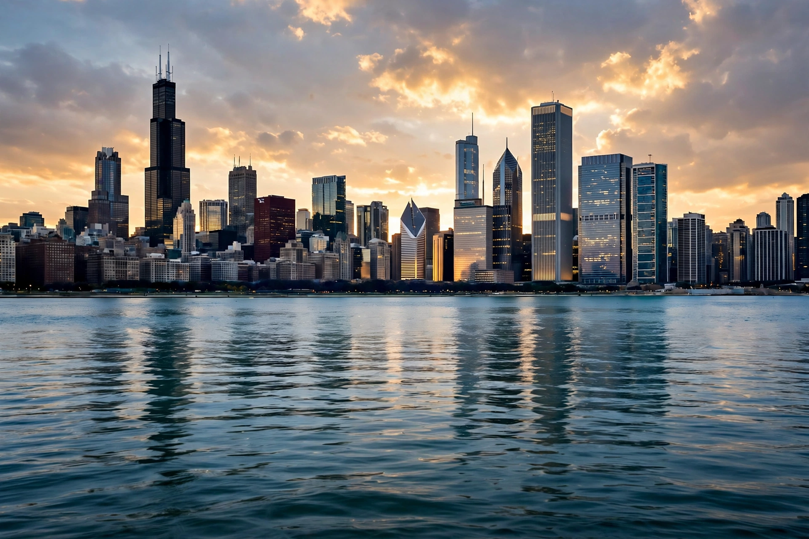

Chicago
| State | Illinois |
|---|---|
| Population | About 2.7 million in the city; about 9.5 million in the metropolitan area |
| Nickname | The Windy City |
| Known for | Architecture, Lake Michigan shoreline, rail and finance hub |
Chicago is the most populous city in the US state of Illinois and the third-most populous city in the United States, located on the southwestern shore of Lake Michigan.

History
Incorporated in 1837 near a portage between the Great Lakes and the Mississippi watershed, Chicago grew rapidly as a transport centre. Much of the city was destroyed by the Great Chicago Fire of 1871 and rebuilt, becoming a laboratory for modern architecture and the skyscraper. In the 20th century it was notorious for organised crime during Prohibition, associated with figures such as Al Capone.
Geography and culture
The city is known for its lakefront, the Chicago River, deep-dish pizza, blues and jazz, and major institutions including its symphony orchestra, museums and universities. Its central business district is known as the Loop, served by elevated rail lines.